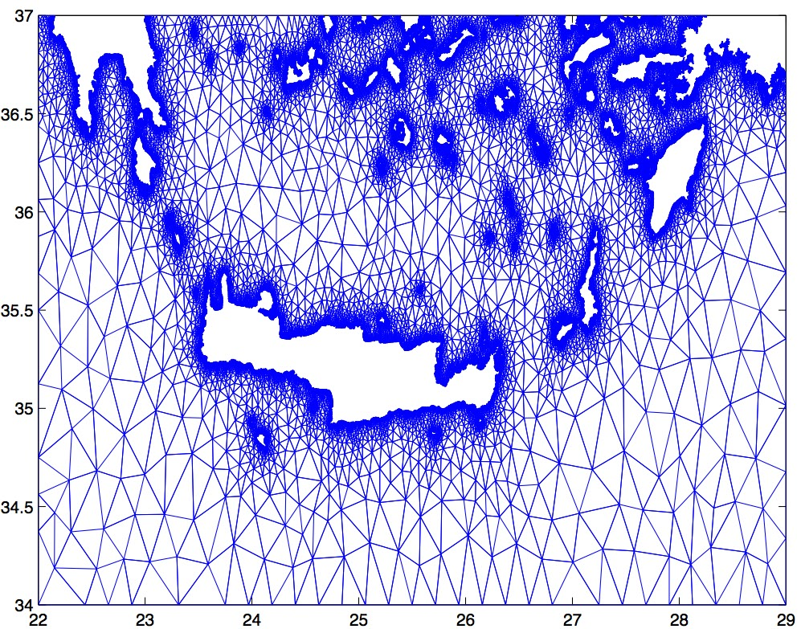

Skip to main content
An example of an unstructured grid

Solitary wave interaction with a vertical cylinder
Solitary wave runup on a conical island
Tsunami wave generation and propagation using a BBM-BBM system
Tsunami propagation
KdV's solitary wave elastic interaction
BBM's solitary wave inelastic interaction
Overtaking collision of two solitary waves of the Bona-Smith system
Head-on collision of two solitary waves of the Bona-Smith system
2D Boussinesq simulation
1D Boussinesq long wave run-up